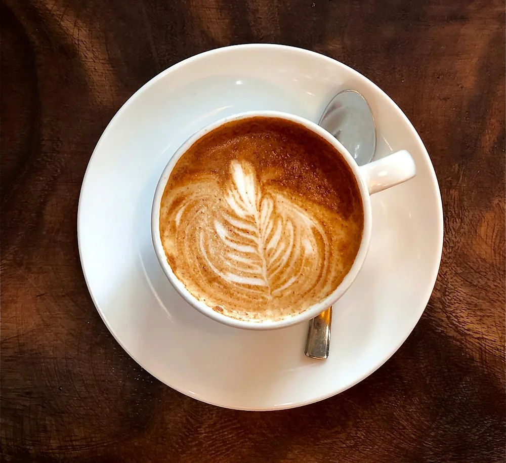
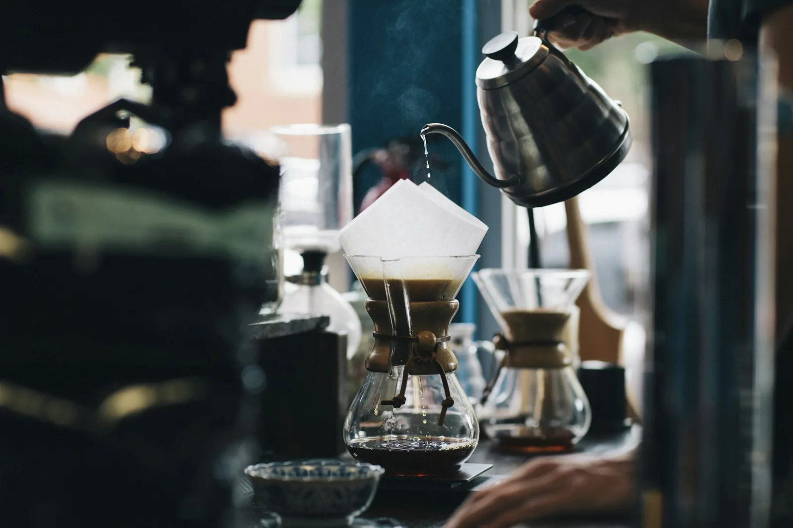
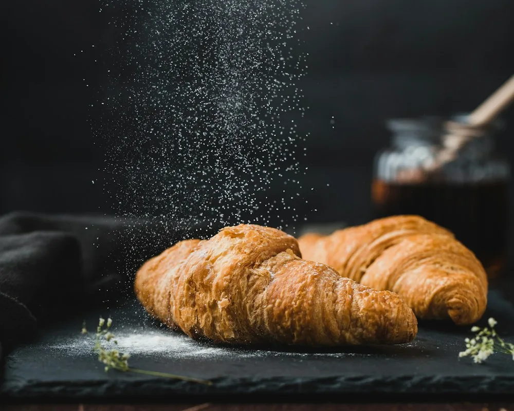
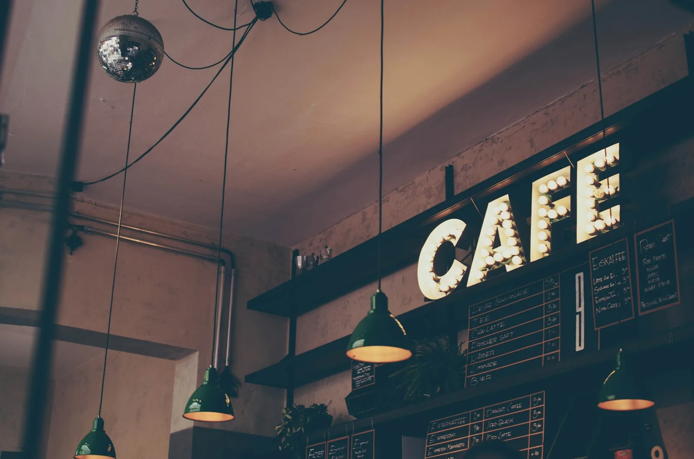

НАШ ЛЮБИМЫЙКапучино
240 ₽Эспрессо, молоко, молочная пена.
250 млМожно без кофеинаСостав и аллергены
Состав: Эспрессо, молоко, молочная пена.
Аллергены: Молоко.

ВАШЕ МЕСТО В РИТМЕ ГОРОДА
Свежий кофе. Тёплая выпечка.
И немного времени для себя.
ЗНАКОМСТВО СО ВКУСОМ

НАШ ЛЮБИМЫЙЭспрессо, молоко, молочная пена.
250 млМожно без кофеинаСостав: Эспрессо, молоко, молочная пена.
Аллергены: Молоко.
 МЯГКИЙ И СЛИВОЧНЫЙ
МЯГКИЙ И СЛИВОЧНЫЙЭспрессо, молоко, ванильный сироп.
350 млМожно без кофеинаСостав: Эспрессо, молоко, ванильный сироп.
Аллергены: Молоко.

ИЗ ПЕЧИ С УТРАПшеничная мука, сливочное масло, молоко, яйцо, сахар, дрожжи.
70 гСостав: Пшеничная мука, сливочное масло, молоко, яйцо, сахар, дрожжи.
Аллергены: Глютен, молоко, яйцо.

ДАВАЙТЕ ЗНАКОМИТЬСЯ
Мы придумали «Тёплый угол» как любимую кухню: здесь пахнет выпечкой, знают ваш кофе и всегда рады встрече.
Выбираем зерно у локальных обжарщиков, готовим небольшими порциями и верим, что забота чувствуется в мелочах.
До встречи за чашкой кофеСЕЗОН МАЛЕНЬКИХ РАДОСТЕЙ
Пряный латте с корицей и согревающий чай с имбирём уже в нашем учебном меню.
Сезонные предложения →